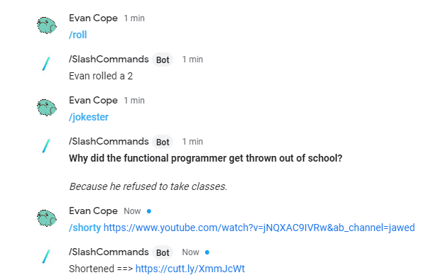
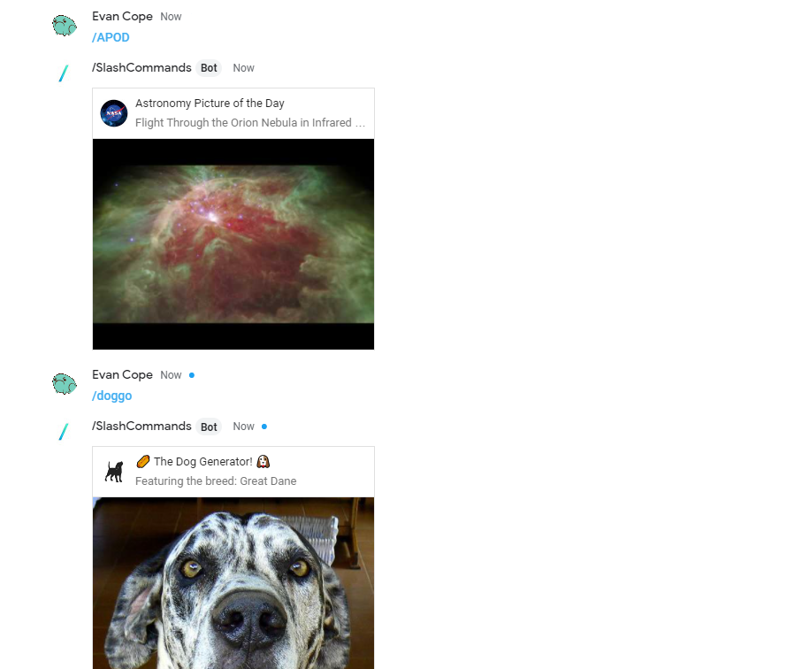

/SlashCommands
This project was built to bring the fun and utilities of slash commands from Google Hangouts to Google Chat. It was developed with Google Apps Script and deployed using Google Cloud.
Here are some of the APIs used to generate the bots different responses:
- ◼️ NASA API
- ◼️ XKCD API
- ◼️ Cuttly API
This chat bot was built in Google Apps Script using the Google Chat API. It responses to commands provided by the user by either performing a specific task or replying with a response card. I've even created a landing page for this project to keep track of the various commands available and their stage in the development process.
The bot logic can be found here.

